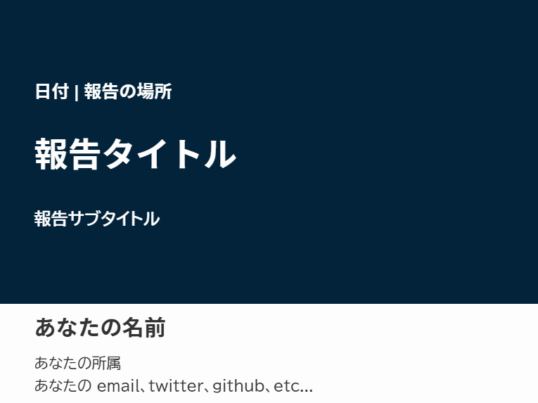
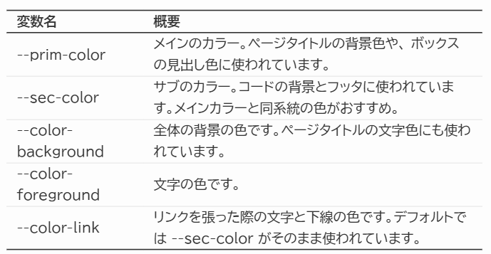

Marp のテーマを作ってみた
Tech
Writing
研究報告で使うためのプレゼンのテーマ ‘Rojina’ を作りました。
個人的な執筆環境でも紹介している通り、スライドはMarp派です。デザインにこだわりたいときは PowerPoint や Google Slides も使いますが、研究報告のスライドはそういう部分を完全に忘れて書くことだけに集中したいです。（というか、数式が打てない時点でパワポもGoogleスライドもメインツールにはなり得ません）
その欲望を満たすため、新しくMarpのためのカスタムテーマ “Rojina” を作成しました。結構満足できたので、紹介させてください。ソースコードもあるので、興味ある方は使ってみてください（そして感想を教えてくれると嬉しいです）。テーマ名はもちろん、このテーマの作成の時間も過ごした、とある喫茶店の名前です。

stats1230/rojina-theme-marp
Rojina: Marp theme for academic slides.
- 自分が政治学系の界隈にいるので、それを前提としたテーマかもしれません
- Beamer の思想をかなり受け継いでいます
- アスペクト比は4:3です
- Beamer の機能の移植もあります
- 私はデザイナーでもなければセンスもないので、おしゃれスライドではありません
Rojina テーマの使い方
“Rojina” は、特に政治学系の学術報告スライドのために作成されたカスタムテーマです。デザインと機能の両方でモダンでプロフェッショナルなテーマを目指しています。
Marp
このテーマは、Marp 向けに作られています。Marp の使い方などは公式ドキュメントなどを参照してください。
Rojina テーマの導入方法
Marp for VS Code または Marp CLI のいずれかの環境が前提です。後者を使う人には説明は不要でしょうから、下記は VS Code で使う人向けの手順です。
1. CSS ファイルを配置する
marp-theme/rojina.cssをダウンロードし、適当な場所に配置します。- おすすめは、作業ディレクトリに
marp-themeというディレクトリを作成することです。 - Settings > Marp: Themes にパスを記入します。
- おすすめは、作業ディレクトリに
- または、Settings > Marp: Themes に次のように入力します。
https://raw.githubusercontent.com/stats1230/rojina-theme-marp/refs/heads/main/rojina.css
後者の方法はPCの環境に影響しないのでスッキリしますが、私がテーマを編集したりレポジトリを消したりすると、その影響を受けてしまいます。
2. Yaml ヘッダの指定
- sample.md を参考に、Markdown ファイル (
.md) を作成します。 - Markdown ファイルの先頭にある yaml ヘッダに、次のように記述します。
---
marp: true
theme: rojina
paginate: true
lang: ja
footer: '<div>氏名</div><div>報告タイトル</div>'
style: |
section {
--prim-color: #03233aff; /* プライマリカラー */
--sec-color: #2a4f69ff; /* セカンダリカラー */
--color-background: #fdfdfd; /* 背景の色 */
--color-foreground: #333; /* 文字の色 */
--color-link: var(--sec-color); /* リンクの色 */
}
---- それ以降は、通常の marp の方法に従ってファイルに記入していきます
- このテーマの独自の機能などについては、sample.md 及び後述の「Rojina の使い方」をご覧ください。
3. PDF への出力
- コマンドパレット (VS Code の画面上部) から
Export Slide Deckを選択します- PDF への出力は Chrome系のブラウザが必要になります。
Rojina の使い方
ここからは、Rojina テーマに実装したいくつかの機能をまとめます。
カラーパレットを自由に変更可能！
- Rojina テーマは、css を書き換えることなくテーマカラーを変更できます！
- 冒頭の yaml ヘッダのうち、style 以降にあるカラーコードを書き換えるだけで、自由に色を選択できます。
| 変数名 | 概要 |
|---|---|
| –prim-color | メインのカラー。ページタイトルの背景色や、 ボックスの見出し色に使われています。 |
| –sec-color | サブのカラー。コードの背景とフッタに使われています。メインカラーと同系統の色がおすすめ。 |
| –color-background | 全体の背景の色です。ページタイトルの文字色にも使われています。 |
| –color-foreground | 文字の色です。 |
| –color-link | リンクを張った際の文字と下線の色です。デフォルトでは –sec-color がそのまま使われています。 |
- 色に困ったときは、“color palette two colors” とかで検索すると幸せになれます。
- メインとサブのカラーは同系統の色が、背景色とは補色系の色がよいです。
タイトルページ
- タイトルページは、次のように書きます。
- タイトル/サブタイトルは
<br>で改行ができます
<!--
_class: title-page
_paginate: false
_footer: ''
-->
### 日付 | 報告の場所
# 報告タイトル
## 報告サブタイトル
<div class="author-block" markdown="1">
### あなたの名前
あなたの所属
あなたの email、twitter、github、etc...
</div>
フッタを表示する
- 各ページのディレクティブ (
<!-- -->で囲まれている部分) に_footnote: ''と書かなければ、フッタが表示されます。 - フッタの内容は、yaml ヘッダの
footer: '<div>氏名</div><div>報告タイトル</div>'で指定できます
 - ちなみにページ番号の部分は
- ちなみにページ番号の部分は _pageniate: false と書けば消えます
ヘッダを表示する
- 各ページのディレクティブに
<!--_header: 'hogehoge' -->と書くと、ヘッダが表示されます。 - セクションタイトルなど情報の少ないものを書くことを想定して、文字をかなり小さくしています。
- 太字 (2つの
**で囲む) は濃く、それ以外は不透明度が下がります。 - CSS のちからでは、自動的なナビゲーションは実装できません。無念。

ページのタイトル
- 見出し2 (
##) がページのタイトルになります - 1ページに見出し2を2つ入れることも技術的には可能ですが……おすすめしません

表を挿入する
- 一般的な markdown 記法に従い表を挿入できます。
- 見出し (header) 部分の上下と、表の一番下に線が引かれます。
- 表全体を
<div class="table-container">と</div>で囲むと7割くらいの大きさになります。

コードブロックを挿入する
- インライン (文中) コードは、2つの “`” (バッククォート) で囲むことで、背景と文字がそれっぽくなります
- 2つの “```” で囲まれた部分は、大きなコードブロックになります。

見出し付きのブロックを挿入する
- 以下のようなコードを書くことで、見出し付きのブロックを挿入できます。
<div class="block">
<div class="block-title">タイトル</div>
<div class="block-content">本文</div>
</div>
- ブロック内でもマークダウン記法が有効です。
- もちろん、\(\TeX\) 記法で数式を含めることもできます。
参考文献のページを作る
- ディレクティブに
_class: refと書くことで、参考文献のページを作ることができます - 参考文献のページは、セリフ体で文字を小さめにしています。
- 通常の論文のように、ぶら下げインデントを再現しています。